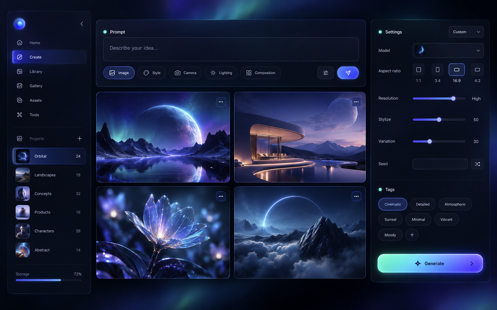

175 / 219
WORK / PROMPT DECODE
极光创作工作台 Aurora Studio
完整提示词 Prompt
cinematic visual AI creative studio web interface, near-black indigo workspace, aurora gradient, luminous prompt composer, image tiles, translucent settings panels, cobalt blue ultraviolet and mint accent, soft bloom, refined dark mode, elegant creative software art direction, high-fidelity desktop interface artwork, no browser chrome, no watermark
备注
重点：把创作软件做成一张有氛围的视觉海报，使用极光渐变和发光面板建立焦点。